加入社区
拓根世界荟聚了精品区块链项⽬，
你可以选择社区加⼊，共同管理项
-
1、在社区页，搜索你感兴趣的社区；

-
2、选择进入平台推荐的社区；
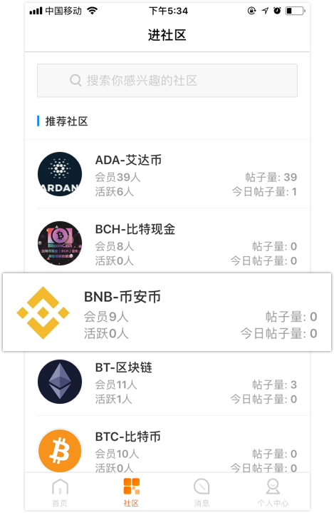
社区功能
-
1、加入:喜欢这个社区，点击右上⻆加⼊；
-
2、管理:设置社区为常驻社区;查看社区成员;退出社区；群组:加⼊社区后，系统默认加入该社区群组，点击直接进入群聊。可在消息栏查看聊天；

-
3、全部/精华帖子:了解社区资讯，周报、项目大事件，项⽬动态等定期汇报；
-
4、发帖:浏览点评帖子的同时，可在社区发帖表达自己独特见解，与社区成员互动共分享；
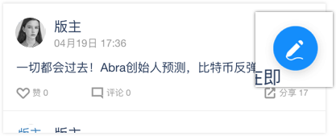 -
5、充币:社区管理理员设置后，用户可在限定时间内⼊手社区token；
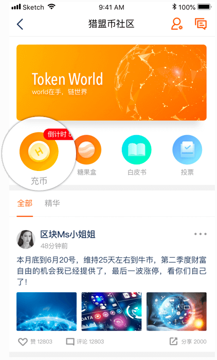 -
6、糖果盒:社区管理员设置后，用户完成任务可领取糖果奖励；
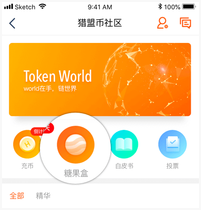 -
7、⽩皮书:通过查看社区⽩皮书，了解项⽬市场方向、商业模式、技术实力、团队背景、发展前景；
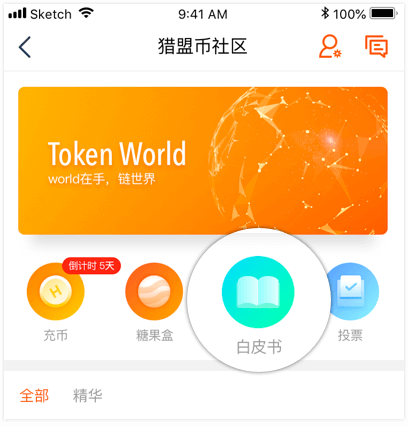 -
8、投票:点击筛选出社区所有投票帖，集中了解社区共识机制；
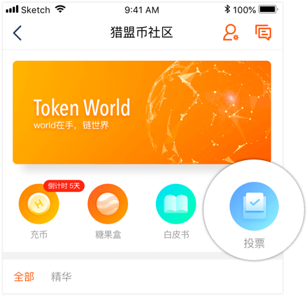
发起投票
-
1、进⼊发帖⻚面，点击添加投票；
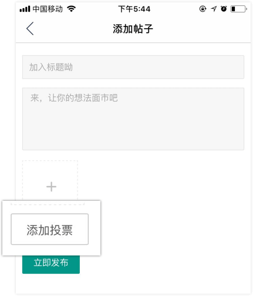 -
2、填写帖⼦标题和内容，完善投票标题、投票选项、起始结束时间。限制投票⻔槛，如用户在社区拥有的最⼩代币数；
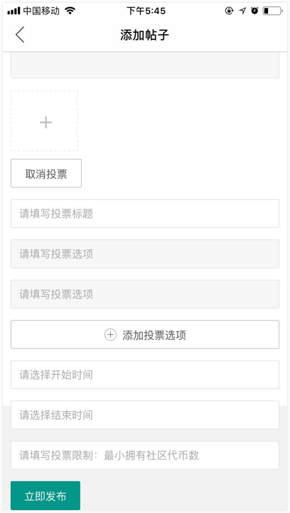 -
3、发帖成功后，⽤户点击投票选项进⾏投票后，实时查看各选项票数；
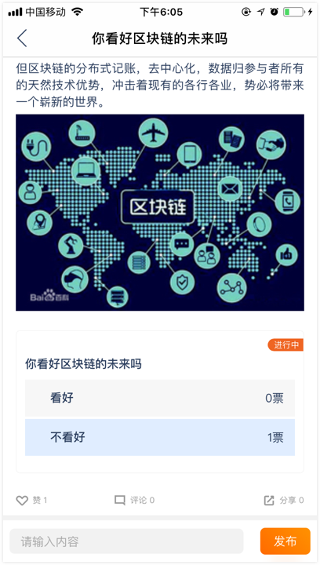
领取糖果
社区管理员设置糖果活动，活动期间参与糖果派发活动，受邀好友成功注册后你和好友均可获得奖励。
-
1、社区⾸页进⼊糖果盒，领取专属分享链接；
-
2、受邀好友在⻚面填写⼿机号码，下载拓根世界APP，注册后创建钱包后可获取糖果；
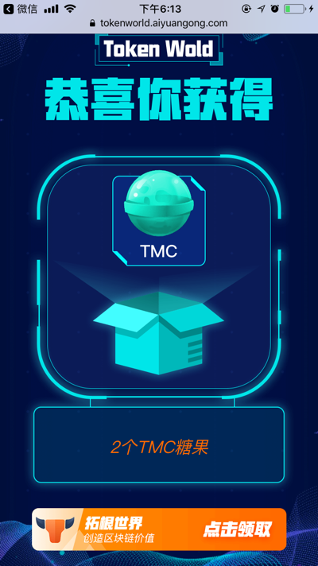 -
3、你可以在邀请⻚面查看⾃己的成功邀请记录，拓根世界会把糖果奖励直接放入你在拓根世界的钱包；
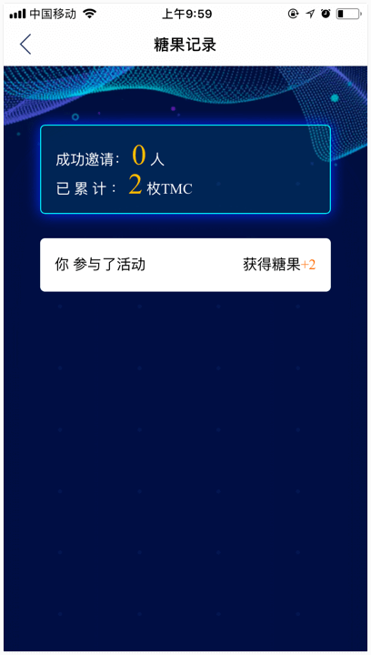
创建钱包
在拓根世界创建⾃己的智能数字钱包，一目了然安全地保管⾃己的数字资产。
创建钱包后你可以进⾏收账转账，参与社区充币、 糖果领取、设置⾸页token走势等功能。
-
钱包创建步骤:
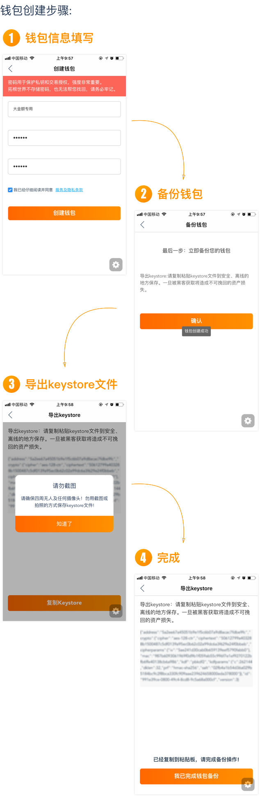
钱包转账
- 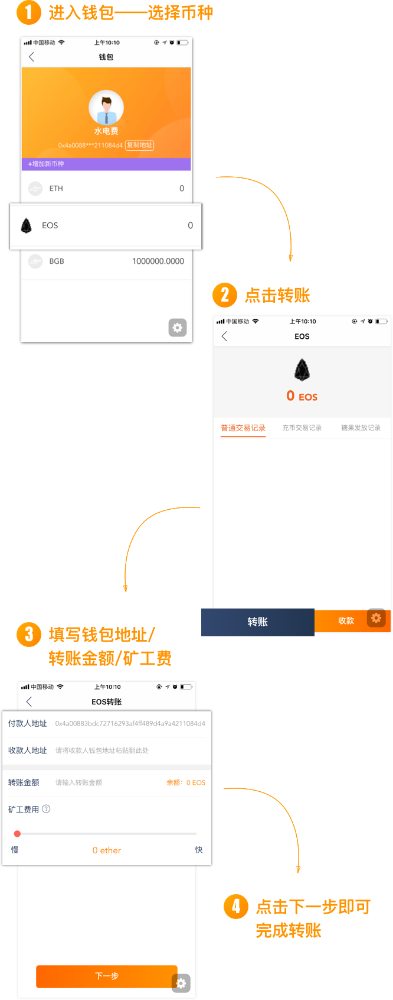
创建社区Token
用户可在拓根世界发行自己的token（数字货币），利用其作为区块链项目的有效激励方式，推进项目进程，提高项目成员创造性。
-
发币步骤：
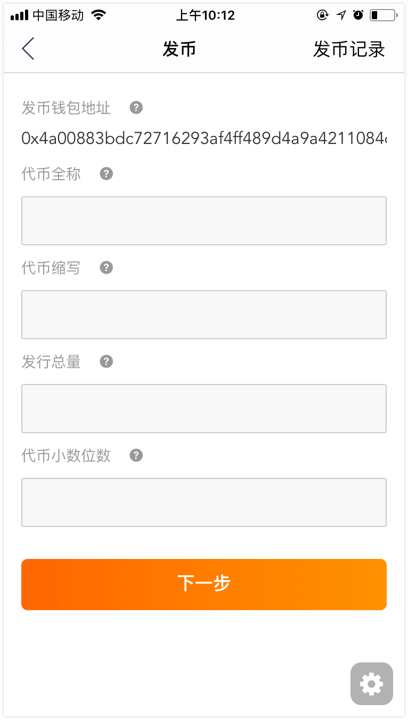
1）创建钱包后获取发币资格；
2）进入发币页面，设置代币名称，代币缩写，代币总量，代币小数位数；
3）发币须支付矿工费用，请保证账户ETH充足；
创建社区
已创建token用户可创建社区，为组织和团队开展协作和分享。
社区是成员的活动大本营，成员可以自定规则，利用拓根世界提供的运营工具，共同搭建社区生态。
-
创建社区步骤：
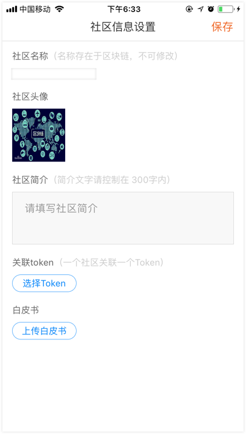
1）发币成功；
2）进入创建社区页面，设置社区名称，头像、社区简介、关联的token，上传白皮书。
3）社区名称存在于区块链，一经创建不可修改。
4）每个数字货币对应一个社区，如用户须创建多个社区，再次发币成功后，才能获取创建社区资格。